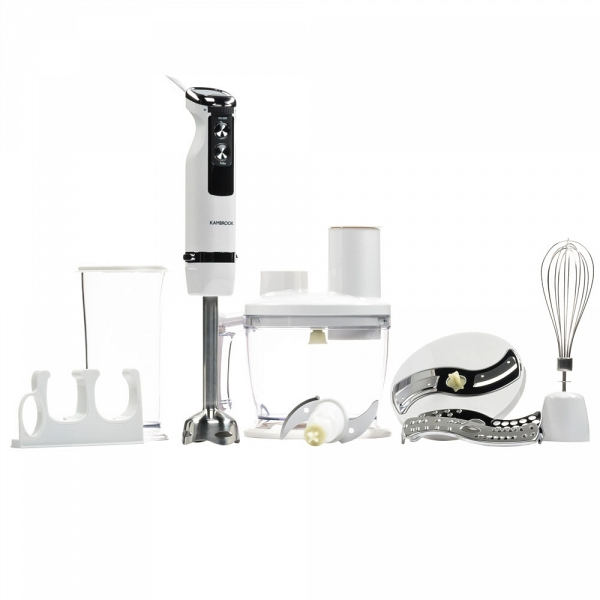
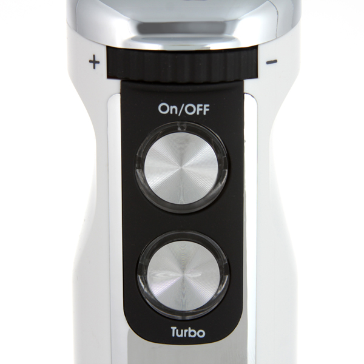
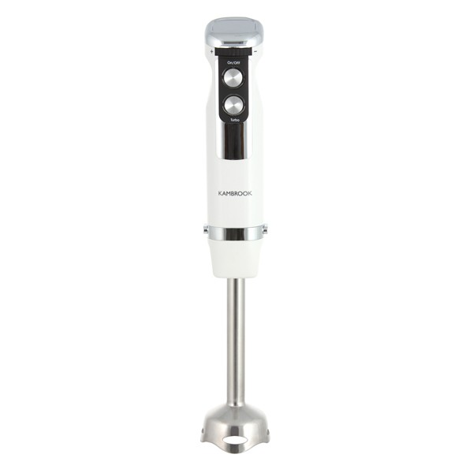
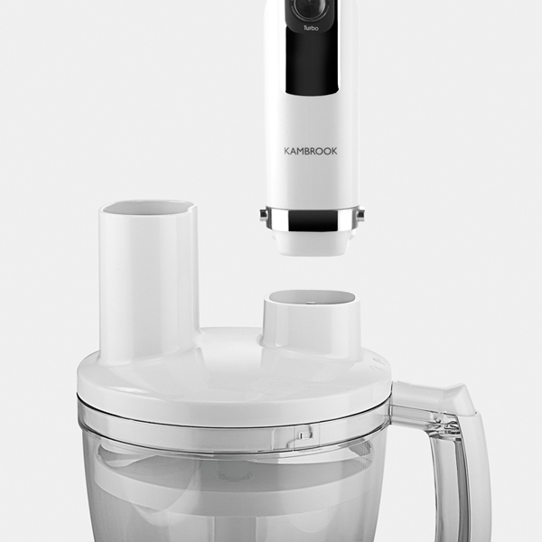
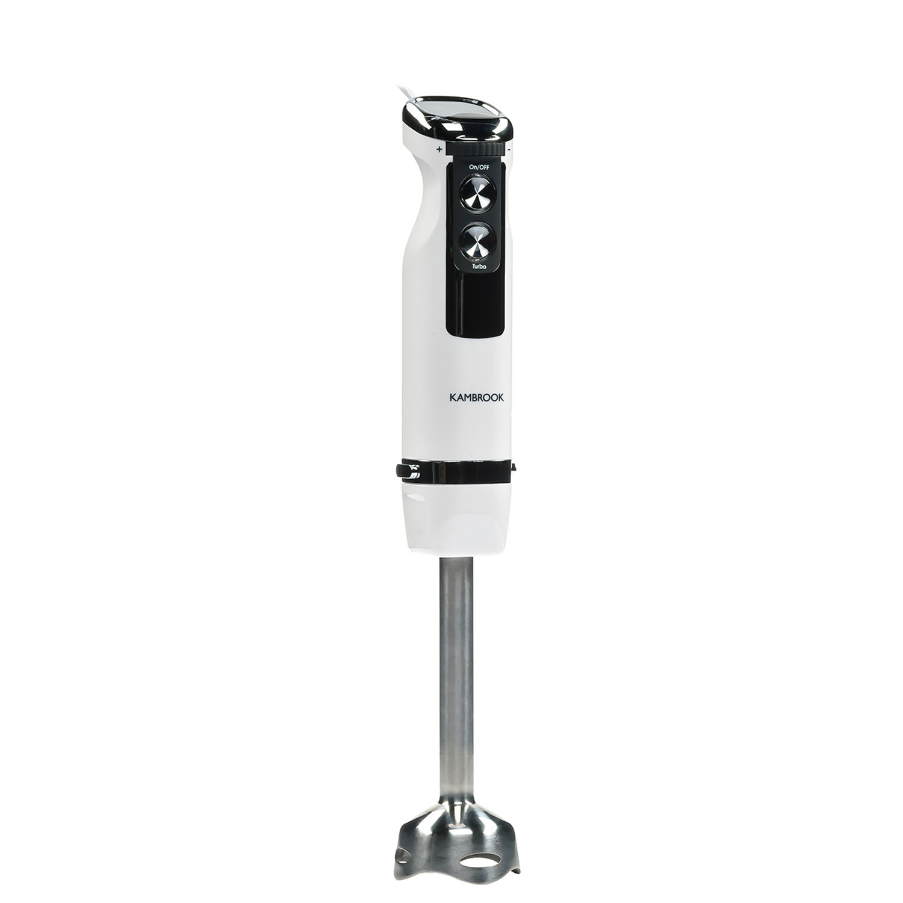
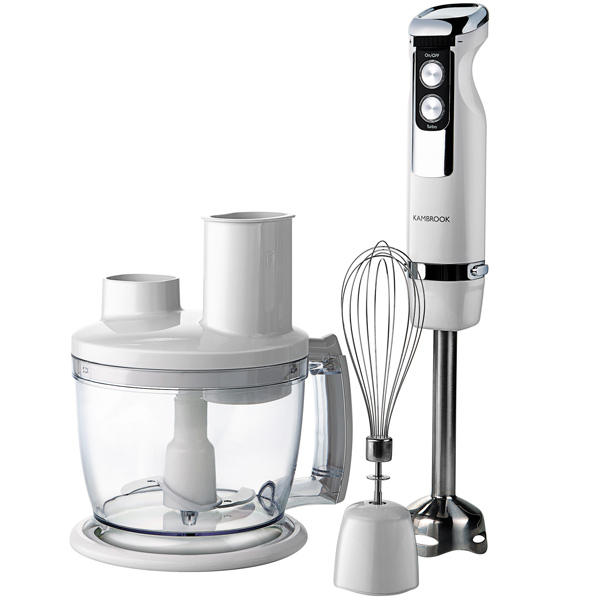

Погружной блендер Kambrook KSB300

10 скоростей и режим Турбо
Чаша-измельчитель объемом 1,25 л
S-образный нож
3-и терки
Световая индикация работы
Kambrook KSB300 – это погружной блендер, который позволяет быстро и тщательно перерабатывать большой объём продуктов. Прибор значительно сократит время приготовления различных блюд, он приглянется любой хозяйке.
Производительность
Аппарат имеет высокий показатель мощности, что позволяет натирать и шинковать продукты за считанные секунды. Наличие 10 скоростей обеспечит именно тот результат взбивания или смешивания, который вам нужен. Блендер имеет 6 насадок разного типа, предназначенных для обработки определённых продуктов.
Конструкция
Корпус Kambrook KSB300 выполнен из высокопрочного пластика со вставками из металла. Погружная часть и лезвия изготовлены из нержавеющей стали, которая не деформируется даже в процессе длительного использования.
Удобство
Управление этой моделью не представляет ничего сложного: для включения, а также выбора режима «Турбо» предназначены всего две кнопки, находящиеся непосредственно на ручке погружной части. Длинный сетевой шнур – 1,2 м – позволит установить прибор практически в любом месте комнаты.
Внешний вид
Блендер имеет оригинальный, эргономичный дизайн, благодаря которому аппарат гармонично впишется в интерьер кухни.
Технические характеристики
Напряжение: 220–240 В
Частота: 50/60 Гц
Мощность: 800 Вт
Скорость вращения ножа: 17000 об./мин
Количество скоростей: 10
Комплектация
- Блендер: 1 шт.
- Насадка-венчик: 1 шт.
- Набор для измельчения:
- Макс. объем чаши 1,5 л с крышкой-фиксатором: 1 шт.
- Насадка для крупной терки: 1 шт.
- Насадка для мелкой терки: 1 шт.
- Насадка для шинковки: 1 шт.
- S-образный нож для измельчения: 1 шт.
- Держатель для насадок
- Мерный стакан с крышкой 0,8 л: 1 шт.
- Настенный крепеж: 1 шт.
Внимание
Продолжительность непрерывной работы блендера не должна превышать 1 мин.
Тестирование
Согласно внутренним правилам Kambrook, погружной блендер KSB300 тестировался в течении 30 часов. Этого достаточно для приготовления 9000 порций картофельного пюре.